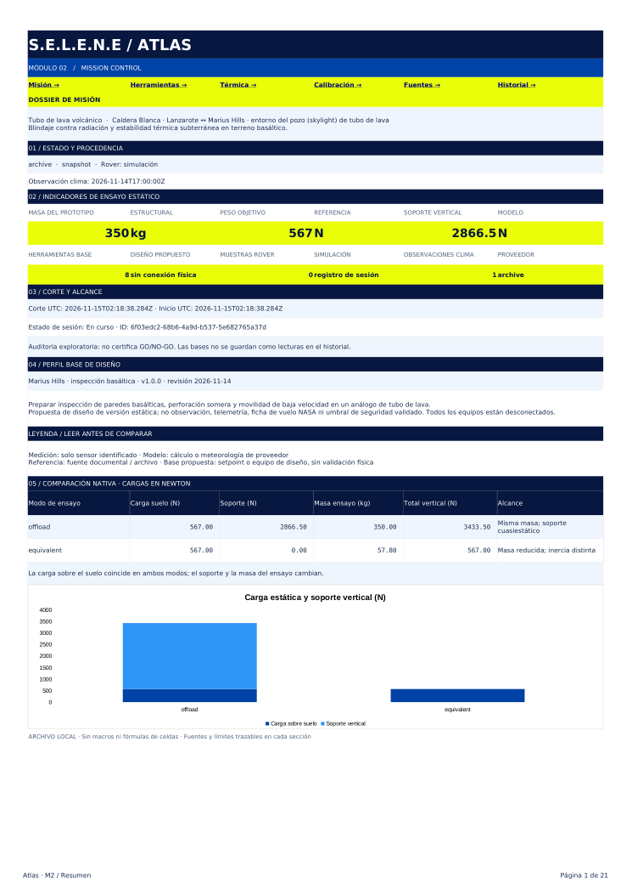
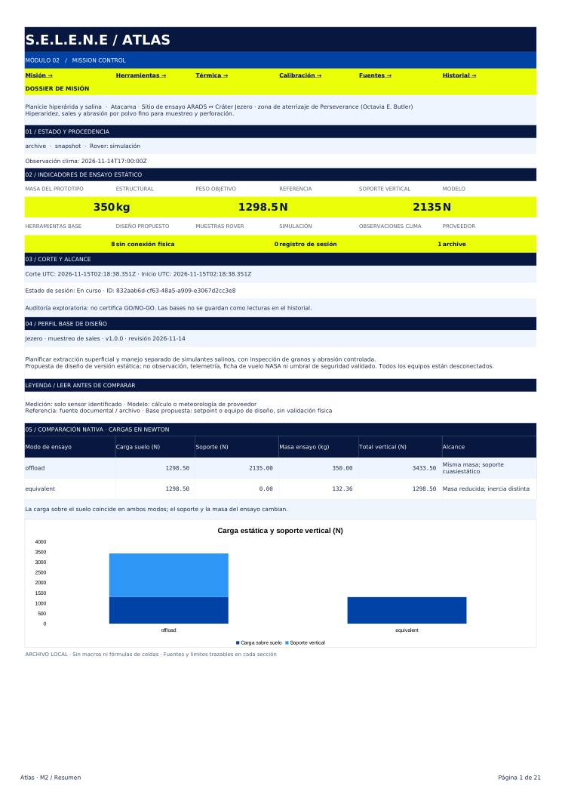

lava-tube / SNAPSHOT · ARCHIVEMarius Hills · inspección basáltica8 herramientas base, valores por unidad y ámbito de masa. Sin movimiento inventado.Descargar Excel Ver PDF de Calc →
polar-shadow / SNAPSHOT · ARCHIVEShackleton · sombra y frío8 herramientas base, valores por unidad y ámbito de masa. Sin movimiento inventado.Descargar Excel Ver PDF de Calc →
hyperarid-salt / SNAPSHOT · ARCHIVEJezero · muestreo de sales8 herramientas base, valores por unidad y ámbito de masa. Sin movimiento inventado.Descargar Excel Ver PDF de Calc →
wind-canyon / SNAPSHOT · ARCHIVECoprates · navegación eólica8 herramientas base, valores por unidad y ámbito de masa. Sin movimiento inventado.Descargar Excel Ver PDF de Calc →